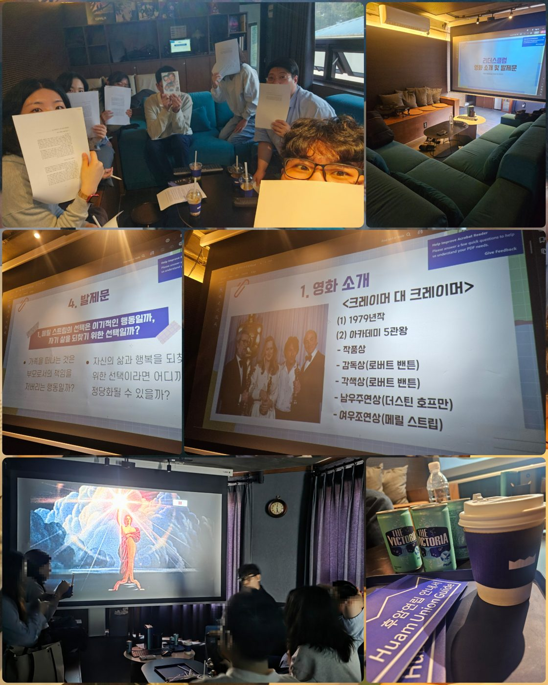

← 리더스클럽
6기 · 10월
가족과 개인의 삶, 무엇을 우선해야 하는가?
환규님 발제 · 〈크레이머 대 크레이머〉
활동 일시
2026년 10월 5일 오후 2시~6시, 4시간 진행
활동 장소
서울 용산구 후암거실 대관
참석자
송정훈, 이환규, 김태상, 김가람, 정미진, 서재은, 김지연 (7명)

후기
타우마제인 아카이브에서 후기글 읽기
thaumazein.kr · 리더스클럽